IB Docs (2) Team
IB Docs (2) Team

Unit 2.5(1): Price elasticity of demand (PED)

Elasticity is an economic concept based on change. It measures how consumers and producers respond to changes in variables that affect demand and supply. Elasticity is important because it allows us to analyse what happens to demand and supply in markets when change takes place and to evaluate the consequences of change.
- Concept of elasticity
- Price elasticity of demand (PED)
- Degrees of PED: theoretical range of values for PED
- Changing PED along a straight line downward sloping demand curve (HL)
- Determinants of PED: number and closeness of substitutes, degree of necessity, the proportion of income spent on the good, time
- Relationship between PED and total revenue
- Importance of PED for business and government decision making
- PED of primary goods and manufactured goods
Revision material
 The link to the attached pdf is revision material from Unit 2.5(1): Price elasticity of demand (PED). The revision material can be downloaded as a student handout.
The link to the attached pdf is revision material from Unit 2.5(1): Price elasticity of demand (PED). The revision material can be downloaded as a student handout.
Elasticity
Elasticity is an economic concept based on change. It measures how consumers and producers respond to changes in variables that affect demand and supply. Elasticity is important because it allows us to analyse what happens to demand and supply in markets when change takes place and to evaluate the consequences of change. For example, when the price of electricity rises we can use elasticity to analyse how consumers and producers will respond to the rise in price.
Definition and measurement of price elasticity of demand
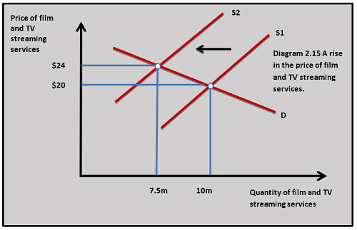
Price elasticity of demand is the responsiveness of quantity demanded for a good to a change in its price. It is measured by the equation:
% change in Qd / % change in P
For example, if the price of film and TV streaming services such as Netflix increases from $20 per month to $24 (20 per cent increase) and quantity demanded falls from 10 million subscribers to 7.5 million subscribers (25 per cent decrease). This is shown in diagram 2.15 and is calculated as:
-25% QD / +20% P = -1.25 or 1.25 (PED)
Interpretation
The value of PED is normally negative because of the law of demand. The negative value is often ignored because the PED value is nearly always negative. In future calculations, the PED will be expressed as a positive value.
Price elastic demand
If the PED value is greater than 1 then the good’s demand is price elastic. This means a change in price leads to a proportionately greater change in quantity demanded. In the film and TV streaming service example, the value is 1.25 which means for every 1% increase in price, the quantity demanded decreases by 1.25%. This is a price elastic relationship because the proportionate change in quantity demanded is greater than the proportionate change in price.
Theoretically, the demand curve can be perfectly horizontal or perfectly elastic. This gives a PED of infinity. This is applicable in the theoretical market form of perfect competition.
Unitary elasticity of demand 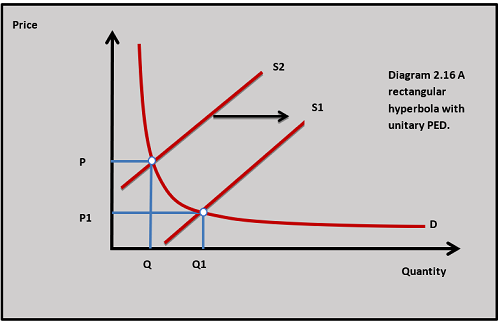
If the PED value is 1 then PED is unitary. This means that for every 1 per cent change in price quantity demanded changes by 1%. It is unlikely a good will have a PED of 1 but the value could be close to 1. This is shown by a demand curve which is a rectangular hyperbola and is represented in diagram 2.16.
Price inelastic demand
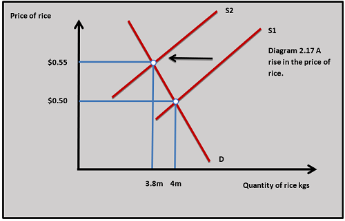
If the demand for a good has a PED value of less than 1 then it is price inelastic. This means that a change in the price of a good leads to a less than proportionate change in quantity demanded. For example, if the price of rice rises from $0.50 to $0.55 and the quantity demanded falls from 4m units to 3.8m then the PED of rice is calculated as:
-5% QD / +10% P = 0.5 (PED)
The PED value of 0.5 means for every 1% change in the price of rice, the quantity demanded changes by 0.5%. This is shown in diagram 2.17. In theory, a perfectly vertical demand curve represents perfectly inelastic demand. This gives a PED of 0.
Demand curves with differing elasticities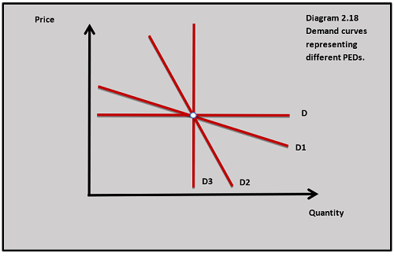
Diagram 2.18 shows demand curves of different slopes to represent different PEDs. A horizontal demand curve is perfectly elastic (D) and with a relatively flat gradient (D1) is relatively elastic. A vertical demand curve (D3) is perfectly inelastic and one which has a relatively steep gradient is inelastic.
All demand curves (except the perfect ones) have a PED that changes from elastic to inelastic as the price of the good is reduced and this is shown in diagram 2.18. The demand curves that represent elastic and inelastic demand situations are useful for illustrating the effects of price changes.
The American NFL team, The Los Angeles Rams have written to their season ticket holders to announce they are raising ticket prices by 8% next season. The team’s owners are confident they can achieve this price increase following the team’s on-field success as winners of the Super Bowl. The Rams are led by wide receiver Cooper Kupp, named the Most Valuable Player 2022.
It is interesting to analyse the PED of the demand for Los Angeles Rams season tickets. The average price of the ticket is $118 so an 8% price increase is going to add over $9 to the selling price of a ticket. The team’s home games often sell out and the number of tickets sold is not expected to fall significantly. This may imply that the demand for the Rams tickets is price inelastic because the people who buy the team's season tickets are very brand loyal to the Rams.
Questions
a. Outline what you understand by price inelastic demand. [2]
Price inelastic demand means that a change in price causes a less than proportionate change in quantity demanded. The demand for a good is price inelastic when the value of PED is less than 1.
b. The Los Angeles Rams have increased their average ticket price (which was $118) by 8% and this has caused the quantity demanded for tickets to fall by 2%. The quantity demand before the change in price was 70,000.
(i) Calculate the new selling price for the tickets. [2]
$118 x 1.08 = $127.44
(ii) Calculate the new quantity demand for the tickets. [2]
70,000 x 0.98 = 68,600
(iii) Calculate the PED of Los Angeles Rams tickets. [2]
-2% / +8% = 0.25 or -0.25
c. Outline what price inelastic demand for Los Angeles Rams tickets means. [2]
Price inelastic demand for Los Angeles Rams tickets means a change in the price of the tickets leads to a less than proportionate change in the quantity demanded for the tickets.
Investigation
Investigate the demand for tickets of other major sports teams to see where PED follows a similar pattern to The Los Angeles Rams.
Elasticity along the demand curve
As the price of a good decreases along the demand curve the PED value falls. Diagram 2.19 illustrates the demand curve for training shoes. As the price of the shoes falls from $50 to $45 the quantity demand increases from 2m units to 3m units. This is a PED of:
+50% QD/ -10% P = 5 (price elastic)
On the upper section of the demand curve, PED is price elastic.
When the price of the training shoes is reduced from $20 to $15 the quantity demanded rises by 8m to 9m units. This is a PED of:
+12.5% QD / -25% P = 0.5 (price inelastic)
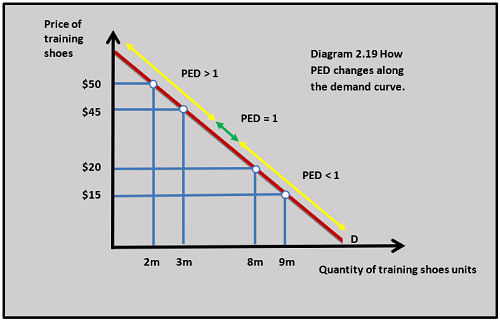
PED falls as you move down the demand curve because a change in price at a relatively high price level has a greater proportionate effect on quantity demanded than the effect of a change in price at a relatively low price. On the upper section of the demand curve in diagram 2.19, PED is price elastic because of the way percentages are calculated. A $5 price reduction from a price of $50 is a smaller percentage change than a $5 price reduction from a $20 price.
Similarly, a 1m quantity increase from 2m to 3m is a larger percentage increase than a 1m increase from 8m to 9m. When the PED is calculated it will have a greater value at higher prices on the demand curve and a smaller value at lower prices.
Determinants of price elasticity of demand
Number and closeness of substitutes
The greater the number of close substitutes a product has the more price elastic its demand tends to be because consumers can easily swap between alternatives when the price of the good changes.
This relates to the way you define the market for a good: the more precisely defined the market for a good, the more close substitutes it tends to have. There are many different brands of biscuits on the shelf of a supermarket, so any one brand of biscuit tends to be relatively price elastic. A rise in the price of Oreo biscuits, for example, may well lead to consumers switching to alternative brands such as Jaffa Cakes. If the market definition broadened from brands of biscuits to biscuits as a product, then there are fewer close substitutes (chocolate bars, crisps, cakes, etc.) and the demand for biscuits will be more inelastic.
Luxury or necessity
The demand for goods that are a necessity for a consumer tends to be more price inelastic than the demand for luxury products which tend to be more price elastic. This is because consumers need to keep buying necessity goods when their price increases. For example, if the price of electricity rises, quantity demand will fall by a proportionately smaller amount because people still need to use electricity to light their homes and run their appliances. Consumers do not, on the other hand, need to keep consuming luxury products if their price increases. For example, if the price of long-haul air tickets increases, people can take fewer holiday flights and the quantity demanded would fall by a relatively greater amount.
Proportion of income
The demand for goods that account for a smaller proportion of household income tends to be more price inelastic. This is because any change in price will have a relatively small impact on household income. For example, consumers might spend a relatively small amount of their income on chewing gum each month, whereas they might spend a larger proportion of their income on train travel. A 20 per cent increase in the price of $1 a pack of chewing gum is likely to have a smaller impact on consumer income than a 20 per cent increase in the price of a $15 daily train ticket, so the PED of chewing gum tends to be more inelastic than the train tickets.
Type of consumer
High-income consumers tend to be less responsive to price changes for goods than people on lower incomes. This is because any price change will have a smaller real income effect on high-income consumers compared to low-income consumers. For example, if the price of a prestige watch rises from $2000 to $2500 then it may have little impact on a wealthy buyer who has an income of a million US$ per year. This is why the demand for luxury goods sold to wealthy individuals tends to be relatively price inelastic. The demand for high-end fashion labels such as Prada and Armani have relatively inelastic demand for their goods because they are targeted at wealthy consumers.
The chart above shows the price of a return airfare between Milan and New York. The price differs significantly between the three classes of tickets. As price increases, you would normally expect the demand for a good to become more price elastic. We would also expect luxury goods to be more price elastic. The pricing strategy of British Airways suggests that demand for airline tickets becomes more inelastic as the price increases. This is partly because of the type of consumer who buys business class compared to economy tickets. A high-income business consumer is willing to pay a higher price for the ticket, particularly if their employer is paying for the cost of it. Economy ticket buyers may well be on lower incomes and as such be more sensitive to price changes.
Questions
The PED data for the different classes of air tickets on the Milan to New York flight is economy -1.89, premium economy -1.52 and business -0.92.
a. Calculate the change in quantity demanded for each class of ticket if BA increases the ticket price for all classes of tickets by 8%. [3]
- Economy -1.89 x 8% = -15.12%
- Premium -1.52 x 8% = -12.16%
- Business -0.92 x 8% = -7.36%
b. Explain why the demand for economy tickets tends to be more price elastic than business class tickets. [4]
The demand for economy tickets tends to be more price elastic than business class tickets because:
- Economy class tickets tend to be bought by individuals with lower incomes than business class travellers and a change in price has a bigger income effect on economy ticket buyers.
- Air travel is more of a luxury for economy travellers who often travel for leisure and a necessity for business travellers who travel for work.
c. Explain what might happen to the PED of airline tickets sold by BA if a competing airline such as Virgin withdrew their Milan to New York flight from the market. [4]
If Virgin withdrew from the Milan to New York ticket market this would reduce the number of substitutes in the market BA would have to compete with on this route. Fewer substitutes would make the demand for BA flights more price inelastic because travellers would have a reduced number of options to choose from if the price of BA flights changed.
d. Explain how the number of substitutes for a good and whether the good is a luxury or necessity affects its price elasticity of demand. [10 marks]
- Definitions of substitutes, PED, luxury good, necessity good.
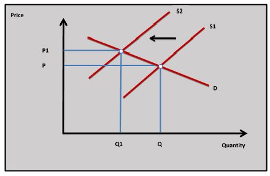
- A demand and supply diagram showing the change in the price of a good with different elasticities of demand.
The diagram shown has a demand curve for a good with relatively price elastic demand because it is a luxury and has a large number of substitutes - An explanation that the more substitutes there are for a good the more price elastic the demand for it tends to be because buyers can more easily substitute towards or away from a good when its price changes.
- An explanation that luxury goods tend to have more price elastic demand compared to necessity goods because consumers are more likely to stop/start buying luxury goods when the price rises/falls relative to necessity goods.
- An example of goods and services whose demand is relatively elastic/inelastic because they have many/few substitutes and are luxuries/necessities. This might include using the airline industry by looking at the number of substitutes for a type of flight and whether an airline ticket is a luxury or a necessity for a particular consumer.
Look at the websites of other major airlines to see the different ticket prices for the same flights.
Time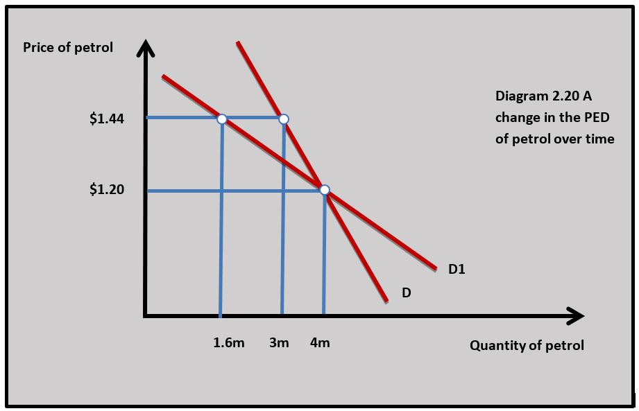
Over time PED tends to become more price elastic because consumers can alter their consumption patterns in response to a price change. In the short run an increase in the price of petrol, for example, will lead to a relatively small decrease in the quantity demanded because petrol buyers can cut back on some leisure journeys, but they still have to get to work and take their children to school.
In the long run, buyers could change to a more fuel-efficient car and move to a house nearer to where they work. Thus the demand for petrol becomes more price elastic in the long run.
Diagram 2.20 shows how the PED for petrol increases from:
-25% QD / +20% P = 1.25 PED to
-60% QD/ +20% P = 3 PED
Price elasticity of demand and revenue
Revenue is the value of income a business receives from selling a good. It is calculated by:
price x quantity = total revenue
For example, an airline sells 500,000 seats a year at a price of $200 then the total revenue is:
500,000 x $200 = $100,000,000
Firms can use an understanding of PED to increase their total revenue. When the demand for a good is price elastic, total revenue rises when the price is reduced and decreases when the price is increased. When the demand for a good is inelastic, total revenue rises when the price is increased and decreases when the price is reduced.
An airline sells seats to a holiday destination. Ticket A is sold during the school summer holidays when demand is relatively price inelastic because families need to travel at that time and the seats are considered a relative necessity. Ticket B is sold outside school holiday time when demand is relatively price elastic because people do not have to travel at that time and seats are considered more of a luxury.
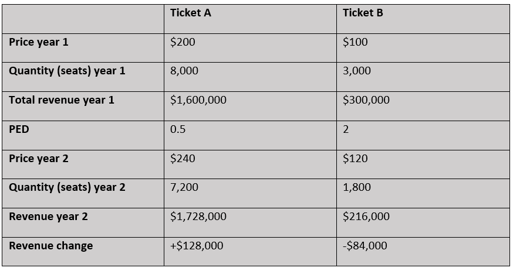
The table shows the price, quantity and revenue for tickets A and B before and after a 20 per cent increase in the price of seat tickets from time period year 1 to time period year 2. The total revenue for ticket A, which has price inelastic demand, increases by $128,000 and the total revenue for ticket B, which has price elastic demand, decreases by $84,000.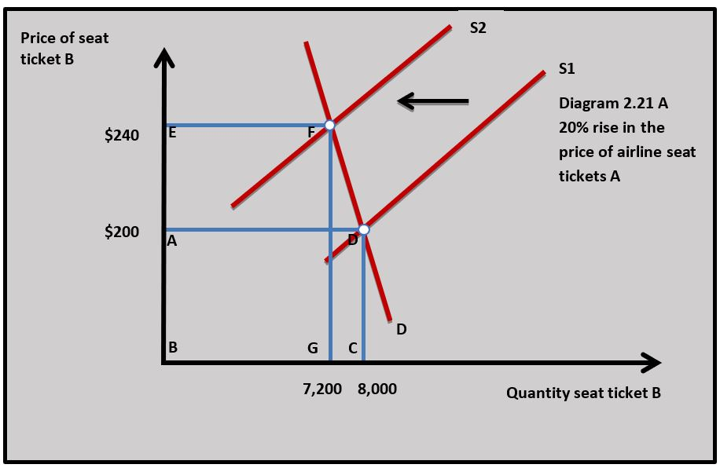
Diagram 2.21 shows how an increase in price for seat ticket A leads to a rise in total revenue. Area EFBG shows the total revenue after the price increase which is greater than area ABCD, which is the total revenue before the price increase.
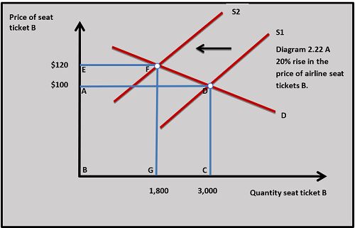
Diagram 2.22 shows how an increase for seat ticket B leads to a fall in total revenue. Area ABCD shows the total revenue before the price increase, which is greater than area EFBG which represents the total revenue after the price increase.The impact on total revenue of changes in PED along the demand curve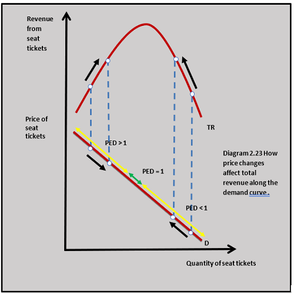
The business response to PED could be to make a judgement about the PED of the demand for the good they sell and then increase or decrease the price of their good in order to increase revenue and hopefully profits. It is important to remember that PED changes as you move along the demand curve and this will affect the revenue from a price change. In diagram 2.23 we can see that a rise in the price of the airline seat ticket with inelastic demand will lead to an increase in total revenue, but as PED rises the rate of increase of total revenue will slow down and peak when PED is unitary. Any increase in price as we move onto the elastic section of the demand curve will lead to a fall in revenue. The same thing happens if the price is reduced on the elastic section of the demand curve. Revenue rises and peaks when PED is unitary and then falls when PED is inelastic.
Revenues at the UK and Irish arm of the German supermarket chain jumped by almost 17% in 2019 as sales rose to £10.2bn. Aldi’s price-cutting approach has drawn in more than one million new customers, helping to increase sales at established stores alongside their new openings. Aldi has become Britain’s fifth biggest supermarket with more than 775 stores in the UK and Ireland, pushing its share of the grocery market to 7.6%.
Aldi’s price strategy is to be very competitive on price and reduce their price below their competitors to drive up revenues and profits. The business has been successful where demand is price elastic because of the number of close substitutes it has in this highly competitive market.
Reducing prices may be one of the key reasons for seeing Aldi’s revenues rise. It may also be worth thinking about other factors that could have increased Aldi’s revenues such as advertising and the quality of their stores. You might also consider why the demand for Aldi’s products is price elastic when it sells so many necessity goods.
Questions
a. Define the term total revenue. [2]
Revenue is the value of income a business receives from selling a good. It is calculated in the following way:
price x quantity = total revenue
b. Using a diagram, explain how the high level of competition in the market Aldi operates in would make the demand for the goods it sells relatively price elastic. [4]
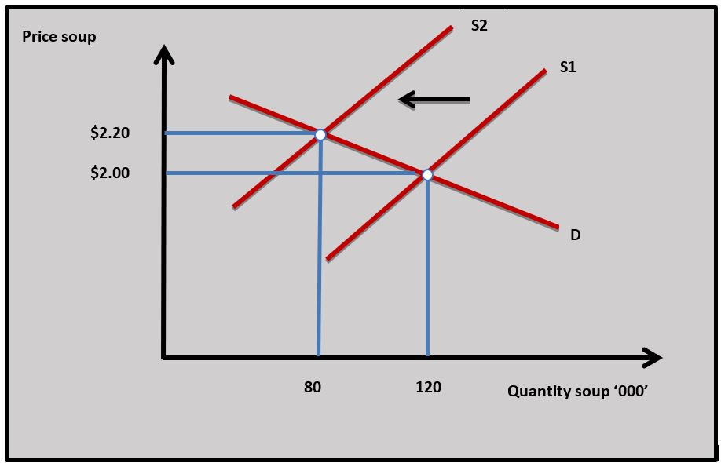
Because there is a high level of competition in the market Aldi operates in there will be many close substitutes for the goods Aldi sells. If there are many close substitutes for a good it makes the demand for the good price elastic because consumers can easily switch between alternatives when prices change. The diagram shows a relatively elastic demand curve for canned soup sold by Aldi. When the price of the soup increases quantity demanded falls more than proportionately.c. The price of washing powder Aldi sells is $2 and the quantity demanded per week is 5000 units. The price of the washing powder falls to $1.80 and the PED of the washing powder is -1.2.
(i) Calculate the weekly change in total revenue Aldi receives from the washing powder. [4]
- Original total revenue: $2 x 5000 = $10000
- Change in quantity demanded -10% (change in price) x -1.2 (PED) = +12% (change in Qd)
- New quantity demanded: 1.12 x 5000 = 5600
- New revenue: $1.80 x 5600 = $10080
- An increase of $80
(ii) Outline the relationship between price elasticity of demand for a good and changes in total revenue when the price of the good increases. [2]
- When the demand for a good is price elastic an increase in price decreases total revenue.
- When the demand for a good is price inelastic an increase in price increases total revenue.
Investigation
Visit your local supermarket and research the pricing of different types of goods. Make a list of 5 goods where you would expect demand to be price elastic and 5 goods where you would expect demand to be inelastic.
Government decision-making and price elasticity of demand
PED will be useful to governments when they are making policy decisions that affect the price of goods and services. PED will have an effect on tax, subsidy, maximum price and minimum price decisions made by governments. The specific effects of PED on these policies are covered in Unit 2.7 Governments and markets.
The price elasticity demand of commodities compared to manufactured goods
Economists are often concerned with the differences in PED between commodities and manufactured goods. The demand for agricultural goods tends to be relatively inelastic because they are often necessities and have fewer close substitutes compared to manufactured goods. If the price of a commodity such as rice increases then households reduce the quantity demanded by a proportionately smaller amount than the increase in price. This is because households depend on rice as part of their diet and there are relatively few close substitutes for it.
Manufactured goods such as personal computers (PCs) are often relative luxuries so the demand for them tends to be more price elastic. The demand for manufactured goods is also considered price elastic because of the number of substitutes they have. If the price of a PC rises people could buy a substitute for a PC like a new mobile phone or tablet computer.
Evaluating price elasticity of demand
PED is used extensively by businesses looking to increase revenue and profit from their pricing strategies. There are, however, some limitations to PED:
- It can change over time as consumer behaviour changes. A new competitor might enter the market for a good which makes the PED for a good more elastic.
- PED is based on the ceteris paribus assumption that price is the only variable that is changing. Income and the price of related goods, as well as other factors that affect demand, are all changing at the same time as the price of the good.
- When a firm changes price there is always going to be uncertainty about how consumers will react. If the price of a good rises above its anchor point then the quantity demanded might fall more than expected.
Inquiry case example - The price elasticity of demand for oil
13 countries are members of the Organisation of the Petroleum Exporting Countries (OPEC). This is an organisation formed in 1960 to regulate the supply of oil to main price stability in its market. Member countries include Algeria, Iran, Nigeria, Saudi Arabia and Venezuela. In July of 2020, OPEC decided to cut the supply of oil by 9.7 barrels per day to force the oil price higher.
By the end of December, the price of a barrel of oil had increased to just over $50 from a low of $20 in April. Throughout 2021 and 2022 the price of oil has continued to rise because of the global economic recovery from the pandemic and geopolitical factors related to the conflict in Ukraine. Oil is currently trading at around $100 a barrel which has significantly increased the revenues of OPEC countries.
Source: CNBC adapted
Questions
a. Explain two reasons why the price elasticity of demand for commodities tends to be price inelastic. [10]
b. Using a real-world example, evaluate the usefulness of price elasticity of demand for producers trying to increase their revenues by raising prices. [15]
Answers might include:
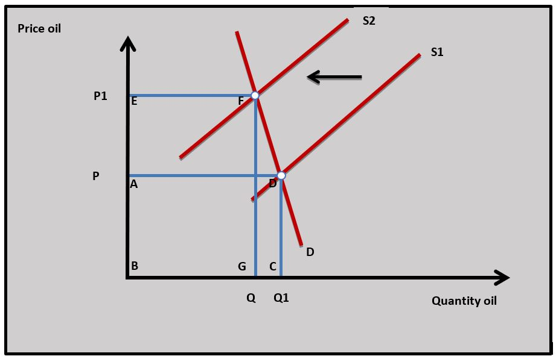
- Definitions of PED and revenues.
- A diagram to show an increase in revenues as the price of oil rises.
- An explanation that if producers increase the price of oil this will lead to an increase in revenue because the demand for oil is price inelastic. As the price of oil increases in the diagram the revenue producers receive from selling oil increases from area ABCD to area BGEF.
- An example of OPEC increasing the price of oil by cutting its supply to increase revenue.
- Evaluation/synthesis might include the problem of accurately measuring the PED of oil which makes forecasting the change in revenue difficult to predict. In addition, changes in non-price factors such as income might be affecting demand and oil revenues. PED also tends to become more elastic in the long run which will have an impact on revenues.
Investigation
Research into the organisation OPEC. How effective do you think it is in managing the price of oil?
Thinking about a key concept - Equity
The high price of particular goods and services in the economy can have a significant impact on certain groups of consumers. Housing, transport and energy are three necessities for nearly all households in society, but the prices of these necessities are particularly important to households on low incomes. The demand for these goods also tends to be price inelastic because they are necessities. So when rents, train fares and electricity bills rise in an economy it can have a very negative effect on the poorest in society who spend a high proportion of their income on these goods.
If you were in a low-income household what would you spend less on when the price of necessities like housing, transport and energy increased in price?
Which of the following equations is used to calculate the PED for good A?
If the price of a type of pizza rises from
-20% / +12.5% = 1.6 or -1.6
If the PED of a brand of training shoe is 1.3. Which of the following is not true?
When PED is price elastic a fall in price leads to a rise in revenue.
Which of the following statements is true about the determinants of PED?
The diagram shows the price of a good falling from P to P1. Which of the following is not true?
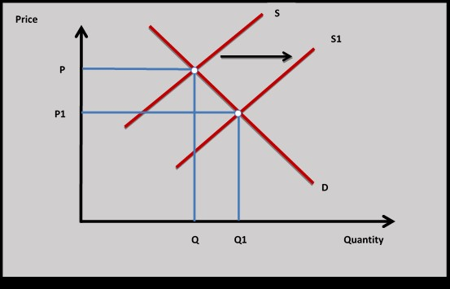
As price falls along a downward sloping demand curve PED falls.
The price of good B falls from
When the price of a good falls PED falls along a demand curve.
If the PED of a good is -0.4 and the quantity demand increases by 22% when the price of the good changed. Which of the following is the percentage change in price?
+22% / -0.4 = -55%
Which of the following would not be a reason why the PED of a commodity such as rice tends to be price inelastic?
If rice accounts for a high proportion of household income its demand will be relatively price elastic.
Which of the following products would you expect to have the most inelastic demand following a price change?
Household electricity is a relative necessity compared to the other goods.
A hotel discounted its room rates at weekends from
Price elastic because as price decreases revenue increases.
 Twitter
Twitter
 Facebook
Facebook
 LinkedIn
LinkedIn